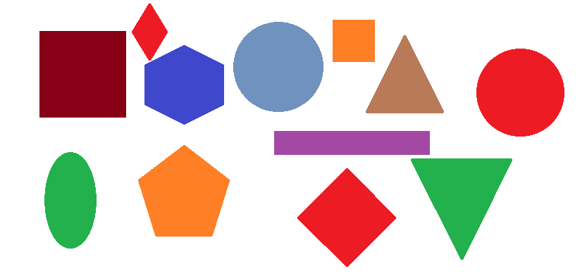
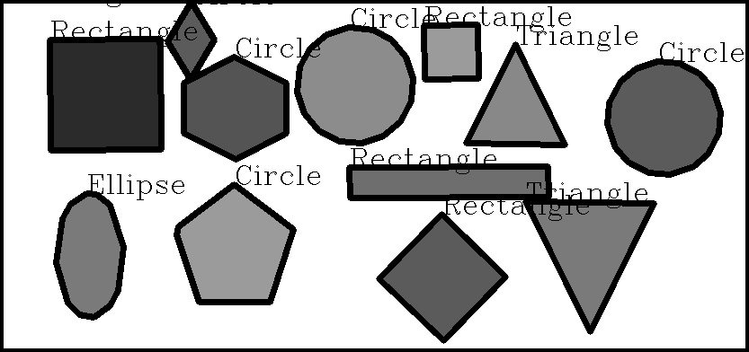

The detection of shapes with the Hough transform is limited to circles. approxPolyDP() allows the approximation of polygons, so if your image contains polygons, they will be quite accurately detected, combining the usage of cv2.findContours and cv2.approxPolyDP.
Here’s the example:
# Import Necessary library
import cv2
import numpy as np
# Read Input image
img = cv2.imread("shapes.png", cv2.IMREAD_GRAYSCALE)
# Set threshold from 240 to 255 intensity
_, threshold = cv2.threshold(img, 240, 255, cv2.THRESH_BINARY)
# Find Contours in image
_, contours, _ = cv2.findContours(threshold, cv2.RETR_TREE, cv2.CHAIN_APPROX_SIMPLE)
# Set font to FONT_HERSHEY_COMPLEX
font = cv2.FONT_HERSHEY_COMPLEX
# Loop through the contours and label them
for cnt in contours:
approx = cv2.approxPolyDP(cnt, 0.01*cv2.arcLength(cnt, True), True)
cv2.drawContours(img, [approx], 0, (0), 5)
x = approx.ravel()[0]
y = approx.ravel()[1]
if len(approx) == 3:
cv2.putText(img, "Triangle", (x, y), font, 1, (0))
elif len(approx) == 4:
cv2.putText(img, "Rectangle", (x, y), font, 1, (0))
elif len(approx) == 5:
cv2.putText(img, "Pentagon", (x, y), font, 1, (0))
elif 6 < len(approx) < 15:
cv2.putText(img, "Ellipse", (x, y), font, 1, (0))
else:
cv2.putText(img, "Circle", (x, y), font, 1, (0))
# Save Output Image
cv2.imwrite("DetectedShapes.jpg", img)
Input Image is:
Output Image for Hough Cirlces will be:
